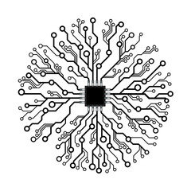

Обо мне
- 10+ лет в IT: Java, PHP, JavaScript etc.
- Пишу, докладываю.
- Заниимаюсь OpenSource.
- Член команды Yii и PHP-FIG.
- Siemens, Wrike, CleverTech, Stay.com, Skyeng.
- Делаю PHP Russia.
PHP Russia
17 мая. Москва.
Поговорим про
Правильные решения и ошибки, сделанные за годы разработки Yii.
Попробуйте применить это к своим проектам
Пришлите сегодня на sam@rmcreative.ru свой кейс. Самый интересный получит билет на PHP Russia в 18:00.
Yii нельзя назвать плохим фреймворком, скорее наоборот
Scope
То, что хочется решить. Что должен охватить продукт.
Не берите слишком много
- Очень много фич.
- И бэкенд и фронтенд.
- Два разных шаблона приложения.
- Почти все SQL-базы, Mongo, Redis, ElasticSearch, Sphinx.
- CUBRID - зачем?!
- PJAX - мы не по frontend...
Количество issue в релизе.
Примеры из коммерческих проектов
- Стремление сделать всё и сразу.
- Релизы раз в год.
Архитектура
Можно делать плохо
- Yii::app-> хотя есть DI.
- Код в view.
- Проверять права в AR.
- ...
Фреймворк может попытаться усложнить неправильное использование, но исключить его не в состоянии.
Нужен опытный лид бить по рукам.

Нарушали SOLID
- В моделях валидация, лейблы, AR.
- Есть толстые интерфейсы.
- Наследование где лучше было сделать композицию.
- ...
В местах с нарушениями много изменений. Высокий churn. Ломается именно там.
Попытки исправить ошибки вместо кидания exception
- PHP-way :(
- Проблема уходит дальше.
- Слишком много вариантов.
Не вооружились многими стандартами
- Часть PSR.
- SemVer.
Завязка на controller/action в роутинге
- DDD, cohesion по use-case.
- "Классика", cohesion по типу (все на одно лицо).
globals
YII_DEBUG.Yii::.- Хрупкость. Тяжело писать тесты.
MVC и Model
- Плохое название.
- M !== один класс ActiveRecord.
Стиль кода не как у всех
- Yii 1.1 - ужас!
- Yii 2.0 - namespace, _privateProperty.
- Не надо так!
- StyleCI.
DI-контейнер и конфиг "под Yii"
- Туча виджетов и обёрток.
Релизный цикл
- Слишком короткий — плохо.
- Слишком длинный — плохо.
- Непонятный — ужасно.
- https://www.yiiframework.com/release-cycle
- Обратная совместимость.
- Релизьте чаще.
Что мы сделали хорошо
Понятный код
- Последовательные действия в одном месте.
- Названия отражают суть, а не паттерны.
Производительность
Yii быстро работает без кеша.
Множество крутых штук
- Виджеты
- Gii
- i18n
- Гриды и data provider-ы
- Безопасность
Документация
Есть ко всему.
Особенности
- Не только Yii, все фреймворки. Symfony меньше, Laravel больше.
- Часто пример пишется прямо в контроллере. Правильные слои — документация распухнет. Порог входа повысится.
- Люди воспринимают буквально.
Сообщество / люди
Планы?
- Отсутствие roadmap демотивирует. Те, кто хочет что-то сделать не понимают что.
- Неизвестность заставляет выдумывать и выдумывать самое плохое.
Планы!
- Делитесь планами.
- Пишите гайдлайны.
- Будьте готовы помочь.
Маркетинг
Маркетинг is king
Деньги и время
- Занимались Yii в свободное время.
- Мало рефлексировали, зарывались в текущие проблемы.
- OpenCollective!
Мотивация
- Never give up. Хейтеры будут хейтить.
- Иногда отказаться от чего-то необходимо: PJAX, CUBRID, HTTP Client, свой request-response.
- Не стоит жечь себя и других.
Yii 3.0
- Будет.
- Будут учтены косяки.
Roadmap
https://github.com/yiisoft/docs - roadmap.
- PSR (HTTP request-response, middleware, container, events).
- DDD-совместимость.
- Всё хорошее из Yii 2.
- Отделение консоли от веба.
- Разбиение на части, которые можно использовать отдельно.
- Строгая типизация.
- SOLID.
- Убийство иерархии классов.
- Убийство большинства wrapper-расширений.
- Отказ от нестандартных объектов.
- Swoole / RoadRunner